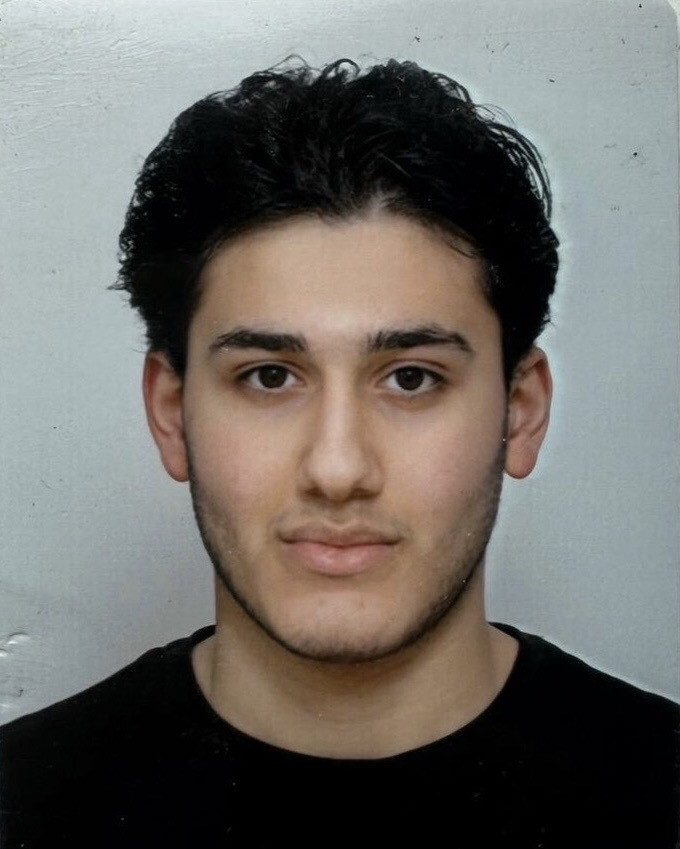
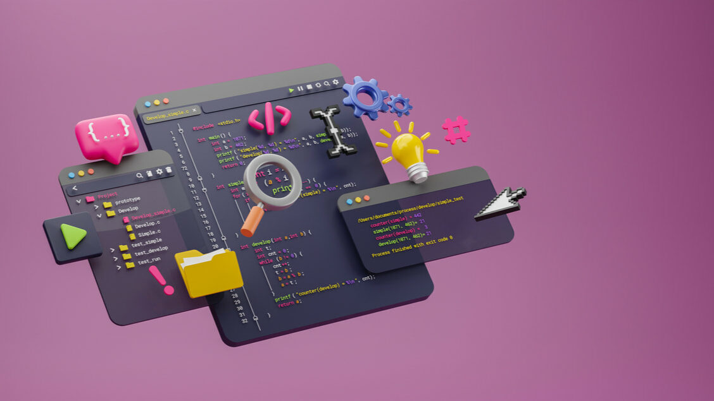

Hallo! Ik ben Rodi Dizjwar en ik ben 18 jaar. Ik zit in klas 1 van de opleiding Software Developer (MBO niveau 4) op het Techniek College Rotterdam.
Ik heb voor deze opleiding gekozen omdat ik thuis veel achter mijn pc zit. Naast het gamen met vrienden wilde ik graag leren hoe websites en games nou echt gemaakt worden. Op deze pagina laat ik zien wat ik in periode 1 heb geleerd.
Voor het project van periode 1 heb ik samen met Servethan een interview gehouden over onze opleiding. Hieronder staan de 5 vragen en mijn antwoorden:
Vraag 1: Waarom heb je gekozen voor de opleiding Software Development?
Antwoord: Omdat ik graag met computers bezig ben en zelf wil leren hoe je websites en programma's opbouwt met code.
Vraag 2: Had je voor deze school al ervaring met programmeren?
Antwoord: Nee eigenlijk niet. Ik ben pas in de eerste weken op het TCR echt begonnen met HTML en CSS typen in Visual Studio Code.
Vraag 3: Wat vind je tot nu toe het leukste onderdeel?
Antwoord: Het stylen van mijn website met CSS. Als je een kleur of maat aanpast en op opslaan drukt, zie je het gelijk veranderen in je browser.
Vraag 4: Wat vond je het lastigste om te doen in periode 1?
Antwoord: Het werken met flexbox om dingen goed naast elkaar te zetten, en in het begin had ik een foutje met dubbele .jpg achter mijn fotonamen.
Vraag 5: Wat wil je in de volgende periodes graag leren?
Antwoord: Ik wil hierna graag leren programmeren met talen zoals JavaScript en PHP zodat mijn website nog meer kan doen.
Deze korte Nederlandse video legt in 1 minuut de basis van HTML uit:
Overzicht van wat we hebben gedaan:
| Vak | Wat we hebben geleerd | Resultaat |
|---|---|---|
| HTML | Basis opbouw, plaatjes, tabellen en formulieren | Behaald |
| CSS | Kleuren, randen, flexbox en media query | Behaald |
| Ontwerpen | Sitemap en wireframes tekenen in Figma | Behaald |

Mijn eigen portfolio website gemaakt met HTML en CSS in periode 1.
Opdracht voor school over hoe nep-mails werken en hoe je ze herkent.
Deze plek is voor het volgende project dat we na periode 1 gaan bouwen.
Gemaakt door Rodi Dizjwar - Klas 1 Software Developer (TCR)